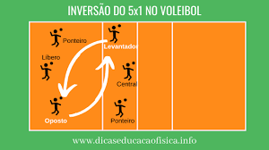

Vamos começar o Treino!
Posição
No vôlei a posição "Oposto" tem esse nome porque o jogador sempre estará na posição oposta do "Levantador", ou seja, nunca na mesma linha de rotação. Para que assim, ele seja capaz de cortar bolas mais rapidas e longas.
Atenção : Lembre-se que no rodizio você rodará sempre que o levantador rodar e sempre ficará oposto a ele. Caso você estejaa no fundo, você irá pular para cortar antes da linha dos três (linha que divide seu lado da quadra), seu pulo deve ser para frente e não para cima, assim, chegando na bola mais rápido.
Recepção
Na hora de receber o saque, o Oposto não ficará em posição de recebimento já que ele será aquele a corta uma bola rápida e afastada da rede. Ele deverá ficar atrás dos outros jogadores, em cima da linha de fundo.
No momento em que o saque for realizado você deve se deslocar, ainda por de trás dos jogadores, rapidamente para ficar em posição de corte.
Se ainda, na rotação, estiver no fundo ainda irá receber os cortes do time adversário normalmente.
Saque Viagem
Atualmente o saque viagem é o mais utilizado pelos profissionais por conta de sua potência e eficiência.
Para este treino será necessário estar em uma quadra, pos conta da prática para poder saber se está acertando ou não.
Passo 1 : Observe atentamente a linha de fundo, já que se você pisar ou ultrapassa-la o saque não valerá.
Passo 2 : Com sua mão dominate, joque a bola girando para o alto e para frente.
Passo 3 : Ao jogar a bola faça como se fosse cortar a bola, use a "passada" para pular e ataca-la em seu maior pico de altura.
Passo 4 : Como a bola estará girando, caso você bata em suas extremidades ela terá um efeito de curva, ou para direita, ou para a esquerda. Caso bata em cima da bola, ela ira para baixo.
Passo 5 : Repita esse processo 100 vezes.